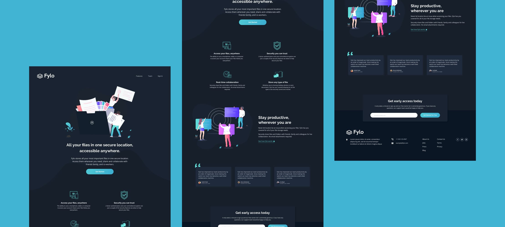

Manage
Esse projeto me fez criar uma landing page responsiza de acordo com o design que recebi. Usei HTML5, CSS Grid e JavaScript para as áreas interativas, como o slider de testimoniais.
Interaction Design / Front End Development
HTML / CSS / JS
visitar
Projeto
Este projeto foi um desafio de front-end do Frontend Mentor. É uma plataforma que te faz práticar construindo websites a partir de um design e casos de usuário. Cada desafio contém designs mobile e desktop para ilustrar como o website seria em diferentes tamanhos de tela. Criar esses projetos me ajudou a refinar meu fluxo de trabalho e resolver problemas de código da vida real. Eu aprendi algo novo com cada projeto, me ajudando a melhorar e adaptar meu estilo.
Previews Estáticos